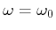
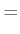
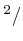
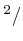

The nonlinear Schrödinger equation (NLSE) in absence of polarization
effects for an electric field [
],
 being the distance [m] and
being the distance [m] and  the time [s], in engineering
notation is the following partial differential equation (PDE) [1]:
the time [s], in engineering
notation is the following partial differential equation (PDE) [1]:
where is the imaginary unit; is the fiber attenuation;
,
, being
the wave propagation constant
and
with
the central frequency/wavelength of , respectively,  being the speed of light; is the nonlinear coefficient.
Such parameters satisfy the following relations.
being the speed of light; is the nonlinear coefficient.
Such parameters satisfy the following relations.
The attenuation [m] is a measure of the power loss along the distance. Assuming all parameters zero except , the NLSE (3.1) becomes:
whose solution is . In Optilux is assumed constant over the signals spectrum even if it actually depends on the wavelength.
The attenuation is usually expressed in [dB/km]. In a dB scale the power loss can be measured as:
Hence, the relation between the attenuation in [m] and the attenuation in [dB/km] is the following:
To the attenuation can be associated the attenuation length as a measure of the distance over which the loss effect is significant. For a typical system having dB/km it is [m].
[s/m] accounts for the group velocity of the signal along the fiber, and hence is a delay per unit length. In presence of only the NLSE writes as:
whose solution is:
Two signals centered at wavelengths and generally have different group velocities and , respectively, and hence travel at different speed. The delay per unit length between the two signals is the walk-off parameter equal to:
means that the channel having group velocity travels slower than the other. The walk-off weights the impact of the XPM and FWM effects.
The GVD parameters are the derivatives of order greater than 1 of
at
. Usually only  [s
[s /m] and
/m] and  [s/m] are included in
the NLSE. Assuming all parameters zero except
the
NLSE becomes a linear PDE and writes as:
[s/m] are included in
the NLSE. Assuming all parameters zero except
the
NLSE becomes a linear PDE and writes as:
which writes in a simple form in the frequency domain :
whose solution is:
Note from (3.4) that, being the system linear, the behavior of each frequency along the fiber depends only by itself. Since in (3.3) the loss is absent, for the energy conservation principle the energy carried by frequency must remain unaltered, i.e. , so that the GVD parameters induce a pure phase rotation in the frequency domain.
Most of the times  and
and  are expressed as functions
of the wavelength through the fiber dispersion,
, and through the fiber dispersion slope,
,
where
. The following relations hold:
are expressed as functions
of the wavelength through the fiber dispersion,
, and through the fiber dispersion slope,
,
where
. The following relations hold:
|  | |||
Note that the third order dispersion  exists even with
zero slope.
exists even with
zero slope.
The dispersion is usually expressed in [ps/(nmkm)]
while the dispersion slope in [ps /(nmkm)].
As a reference, at
nm it is
s
m]
=-
[ps/(nmkm)].
/(nmkm)].
As a reference, at
nm it is
s
m]
=-
[ps/(nmkm)].
( ) corresponds to anomalous dispersion, ( ) corresponds to normal dispersion.
To the GVD parameters can be associated the dispersion length,
,
and the dispersion slope length,
 ,
being a reference time, generally the symbol time. The previous
lengths have signs, hence sometimes the absolute value is used. For
instance, the power of a Gaussian pulse doubles its width after
propagating over a length of [1].
,
being a reference time, generally the symbol time. The previous
lengths have signs, hence sometimes the absolute value is used. For
instance, the power of a Gaussian pulse doubles its width after
propagating over a length of [1].
The nonlinear coefficient [1/(Wkm)] is due to
the Kerr effect of the fiber. The relation between the nonlinear coefficient
and the fiber nonlinear index [m /W] is the following:
/W] is the following:
being
[ m
m ] the fiber effective
area. As a reference, a single mode fiber (SMF) has almost
] the fiber effective
area. As a reference, a single mode fiber (SMF) has almost
 m
m and
[m
and
[m /W] thus giving
[1/
] @
nm, while for a dispersion compensating fiber (DCF) the value is usually
four times larger due to a reduced effective area. To the nonlinear
coefficient can be associated the nonlinear length
,
being a reference power, usually the transmitted signal peak
power. A direct comparison between the nonlinear length and the dispersion
length allows to deduce the propagation regime inside the optical
fiber.
implies propagation in the dispersion,
or purely linear, regime; on the opposite with
the propagation is in the nonlinear regime.
/W] thus giving
[1/
] @
nm, while for a dispersion compensating fiber (DCF) the value is usually
four times larger due to a reduced effective area. To the nonlinear
coefficient can be associated the nonlinear length
,
being a reference power, usually the transmitted signal peak
power. A direct comparison between the nonlinear length and the dispersion
length allows to deduce the propagation regime inside the optical
fiber.
implies propagation in the dispersion,
or purely linear, regime; on the opposite with
the propagation is in the nonlinear regime.
In the nonlinear regime the NLSE writes as:
where is the SPM nonlinear phase rotation, while
is the effective length up to coordinate  and is equal to:
and is equal to:
For , while for . It turns out that is a measure of the distance over which the nonlinear effect is significant.
Note from (3.6) that the solution is memoryless
so that what happens at time  depends only from the input at the
same time. Assuming zero loss, for the energy conservation principle
the energy carried by time
depends only from the input at the
same time. Assuming zero loss, for the energy conservation principle
the energy carried by time  , being the system memoryless, must
remain unaltered, i.e.
,
so that SPM is a pure phase rotation in the time domain.
, being the system memoryless, must
remain unaltered, i.e.
,
so that SPM is a pure phase rotation in the time domain.
In the frequency domain (3.1) the Fourier transform of the electric field, i.e. , satisfies the following NLSE:
where the integrals cover the entire space of real numbers. With the definition with the NLSE becomes:
The time  is usually called the retarded time frame. Note that
the linear impairment still remains in the equation since
the NLSE is a nonlinear differential equation.
is usually called the retarded time frame. Note that
the linear impairment still remains in the equation since
the NLSE is a nonlinear differential equation.
Alternatively, by writing with , being and a reference time and power, respectively, and exploiting the characteristics lengths we have the following:
where  is the time in a retarded frame normalized to a reference
time .
is the time in a retarded frame normalized to a reference
time .
Optilux toolbox reference manual